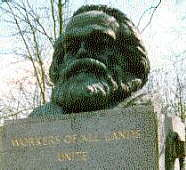
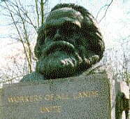

Philosophy Pages
| Dictionary | Study Guide | Logic | F A Q s | ||
|---|---|---|---|---|---|---|
| History | Timeline | Philosophers | Locke | |||
| Philosophy Pages
| Dictionary | Study Guide | Logic | F A Q s | ||
|---|---|---|---|---|---|---|
| History | Timeline | Philosophers | Locke | |||

|
Life and Works . . Alienation . . Communism . . Economics Bibliography Internet Sources |
Karl Marx was born and educated in Prussia, where he fell under the influence of Ludwig Feuerbach and other radical Hegelians. Although he shared Hegel's belief in dialectical structure and historical inevitability, Marx held that the foundations of reality lay in the material base of economics rather than in the abstract thought of idealistic philosophy. He earned a doctorate at Jena in 1841, writing on the materialism and atheism of Greek atomists, then moved to Köln, where he founded and edited a radical newspaper, Rheinische Zeitung. Although he also attempted to earn a living as a journalist in Paris and Brussels, Marx's participation in unpopular political movements made it difficult to support his growing family. He finally settled in London in 1849, where he lived in poverty while studying and developing his economic and political theories. Above all else, Marx believed that philosophy ought to be employed in practice to change the world.
The core of Marx's economic analysis found early expression in the Ökonomisch-philosophische Manuskripte aus dem Jahre 1844
(Economic and Political Manuscripts of 1844) (1844).
 There, Marx argued that
the conditions of modern industrial societies invariably result in the estrangement
(or alienation) of workers from their own labor.
In his review of a Bruno Baier book,
On the Jewish Question (1844), Marx decried the lingering influence of religion over politics and proposed a revolutionary re-structuring of European society.
Much later, Marx undertook a systematic explanation of his economic theories in Das Capital
(Capital) (1867-95) and Theorien Über den Mehrwert (Theory of Surplus Value) (1862).

There, Marx argued that
the conditions of modern industrial societies invariably result in the estrangement
(or alienation) of workers from their own labor.
In his review of a Bruno Baier book,
On the Jewish Question (1844), Marx decried the lingering influence of religion over politics and proposed a revolutionary re-structuring of European society.
Much later, Marx undertook a systematic explanation of his economic theories in Das Capital
(Capital) (1867-95) and Theorien Über den Mehrwert (Theory of Surplus Value) (1862).

Marx and his colleague Friedrich Engels issued the Manifest der kommunistischen Partei (Communist Manifesto) (1848) in the explicit hope of precipitating social revolution. This work describes the class struggle between proletariat and bourgeoisie, distinguishes communism from other socialist movements, proposes a list of specific social reforms, and urges all workers to unite in revolution against existing regimes. (You may wish to compare this prophetic document with the later exposition of similar principles in Lenin's State and Revolution (1919).)
|
Recommended Reading:
Primary sources:
Secondary sources:
Additional on-line information about Marx includes:
|